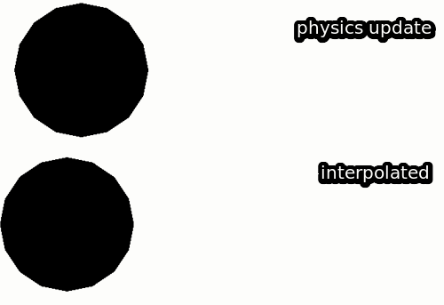

Fix Your Timestep! | Gaffer On Games is the go to article for how to handle game loops and the ggez::timer documentation points to it on how to handle frame timings. This article gives rust and ggez versions of the different game loops and is aimed at someone making 2D games, but I recommend you also read "Fix Your Timestep" if you haven't done so already!
Fixed time steps using Vsync
Using Vsync is recommended by the ggez documentation as the "generally the best way to cap your displayed frame rate". Using Vsync is a safe way to limit the CPU usage of your game loop and a good place to start from if we're in the midst of a game jam!
$ vblank_mode=1 cargo run --bin vsync
Finished dev [unoptimized + debuginfo] target(s) in 0.08s
Running `target/debug/vsync`
ATTENTION: default value of option vblank_mode overridden by environment.
...
[update] ticks: 450 fps: 59.93609493685643 delta: 16.671497ms
[draw] ticks: 450 fps: 59.93609493685643 delta: 16.671497ms
[update] ticks: 451 fps: 59.932165179519906 delta: 15.95258ms
[draw] ticks: 451 fps: 59.932165179519906 delta: 15.95258ms
The result is a game loop running at sixty frames per second, with a game tick per frame.
Variable delta time
We're taking the ggez example code moving a simple shape across the screen to demonstrate the effect of each loop. The drawing and simulation code is less important than the code in the EventHandler. It demonstrates we're passing the amount of time that has passed each frame, timer::delta(), to our simulation step in update and using self.pos_x as the position to render the circle in our draw call.
The downside of this loop is we can pass any possible size delta time to our simulation step, this is demonstrated if we uncomment the timer::sleep() line to simulate some heavy physics calculations per step.
slow physics steps means collisions might be skipped
Instead of smoothly moving, from both the rendering AND simulation's perspective, the circle is "jumping" across the screen, if we added collision detection and another object in the path of the circle, there's a chance the circle would not collide with the object as our simulation is taking large steps running at ~2 second intervals.
Semi-fixed time step
To fix the "jumping" issue, we consume the delta time in dt size slices. So even if the frame stutters, then we'll gracefully simulate the remaining steps even if you don't see it on screen, helping stabilize our simulation. Here we've set dt to 60 fps.
If you run this you'll see the update and draw calls, and the distance the circle moves per update call is at most 1. Any remaining delta time is handled in the next iteration of the while loop.
We "free the physics" by leaving any of those small left over time slices for the next game loop. Luckily for us, ggez is built to handle this sort of game loop easily and our example code here matches the documentation in ggez::timer::check_update_time
No matter how many draw calls occur, our simulation step always moves our circle by 1.2 and the left over delta time is thrown over to the next frame.
The final touch!
Up until this point, our draw function has remained mostly unchanged in all these game loops. This is addressed in "the final touch", since our game loop is running at a different fps to our render, the final image may visually stutter, as the circle is always being rendered to the location where our last simulated step occured.
We can address this by storing the previous physics step and blending it with the current simulated physics step.
usestd::{env,path};useggez::event::{self,EventHandler};useggez::nalgebra::Point2;useggez::{filesystem,graphics,timer};useggez::{Context,GameResult};constPHYSICS_SIMULATION_FPS: u32=100;constPHYSICS_DELTA_TIME: f64=1.0/PHYSICS_SIMULATION_FPSasf64;implEventHandlerforTheFinalTouch{fnupdate(&mutself,ctx: &mutContext)-> GameResult<()>{whiletimer::check_update_time(ctx,PHYSICS_SIMULATION_FPS){letdistance=self.velocity_xasf64*PHYSICS_DELTA_TIME;println!("[update] distance {}",distance);self.previous_x=self.pos_x;self.pos_x=self.pos_x%800.0+distanceasf32;}Ok(())}fndraw(&mutself,ctx: &mutContext)-> GameResult<()>{graphics::clear(ctx,graphics::WHITE);self.draw_fps_counter(ctx)?;letblended_x=self.interpolate(ctx);self.draw_circles(ctx,blended_x)?;graphics::present(ctx)}}structTheFinalTouch{previous_x: f32,pos_x: f32,velocity_x: f32,}implTheFinalTouch{pubfninterpolate(&self,ctx: &mutContext)-> f32{letremainder=timer::remaining_update_time(ctx).as_secs_f64();letalpha=remainder/PHYSICS_DELTA_TIME;letprevious_x=ifself.pos_x>=self.previous_x{self.previous_x}else{// if we're wrapping round, interpolating in between the two would mean// circle would zip from right to left instead of going off screen800.0-self.previous_x};letblended_x=(self.pos_x*alphaasf32)+(previous_x*(1.0-alphaasf32));blended_x}pubfndraw_circles(&self,ctx: &mutContext,blended_x: f32)-> GameResult<()>{letcircle=graphics::Mesh::new_circle(ctx,graphics::DrawMode::fill(),Point2::new(0.0,0.0),100.0,2.0,graphics::BLACK,)?;println!("{:?} {:?}",self.pos_x,blended_x);graphics::draw(ctx,&circle,(Point2::new(self.pos_x,150.0),))?;graphics::draw(ctx,&circle,(Point2::new(blended_x,380.0),))}pubfnnew(_ctx: &mutContext)-> TheFinalTouch{TheFinalTouch{previous_x: 0.0,pos_x: 0.0,velocity_x: 150.0,}}pubfndraw_fps_counter(&self,ctx: &mutContext)-> GameResult<()>{letfps=timer::fps(ctx);letdelta=timer::delta(ctx);letstats_display=graphics::Text::new(format!("FPS: {}, delta: {:?}",fps,delta));println!("[draw] ticks: {}\tfps: {}\tdelta: {:?}",timer::ticks(ctx),fps,delta,);graphics::draw(ctx,&stats_display,(Point2::new(0.0,0.0),graphics::BLACK),)}}fnmain()-> GameResult{letmutcb=ggez::ContextBuilder::new("name","author");ifletOk(manifest_dir)=env::var("CARGO_MANIFEST_DIR"){letpath=path::PathBuf::from(manifest_dir).join("resources");cb=cb.add_resource_path(path);}let(ctx,event_loop)=&mutcb.build()?;println!("{:#?}",filesystem::read_config(ctx));letmutvsync_demo=TheFinalTouch::new(ctx);event::run(ctx,event_loop,&mutvsync_demo)}
We've set our PHYSICS_SIMULATION_FPS to run at 5 frames per second, to demonstrate that now matter how slow our simulation runs, it appears smooth during the rendering step thanks to the interpolation in the draw function. I've added the drawing of the "free the physics!" step for a comparison.

interpolating physics states to smooth animation
But the final touch is lagging behind!
Yes! It's accentuated as we've set the physics step to be so low in comparison to the render loop. I recommend looking at Fixed-Time-Step Implementation | L. Spiro Engine if you're not convinced, but the short version is that many of your favourite games, even twitch based shooters will likely be using a loop like this. This is our same example with PHYSICS_SIMULATION_FPS set at 100fps and Vsync turned off, the gif has been limited to 60fps, so the best way would be to run this for yourself.
The living end...?
Do I really need to do all this interpolation stuff?
Depending on your game, maybe not! Whilst this might be suitable for something like asteroids, if you're just making a tetris clone, then you will probably want the tetrominoes to fall in fixed increments instead of smoothly falling.
If you're making a game with pixel art, you probably don't need to use this technique as you probably don't need this unless you have a clever way of interpolating pixel art. In these cases are probably safe using the "Free the physics" style loop where the fixed time step is the same as your animations' frames per second.
Do I want to skip frames with pixel art?
The while loop in "Free the physics" also means that if the game slows down or stutters during the game loop, we might simulate multiple steps, but only have one draw call. If you're making a 2D fighting game, you could argue that people would get annoyed if frames were skipped and their game sprite was suddenly hit in the face. In this case, players might prefer slow down over skipping frames.
On the other hand If you're deciding to make something like an x-com clone or any other turn based game where visual artifacts aren't quite so critical, keeping your game running smooth is probably a higher priority.
This is usually implemented as a user configurable "frame skip", letting the user choose whether they want the simulation to continue instead of slowing down the entire game